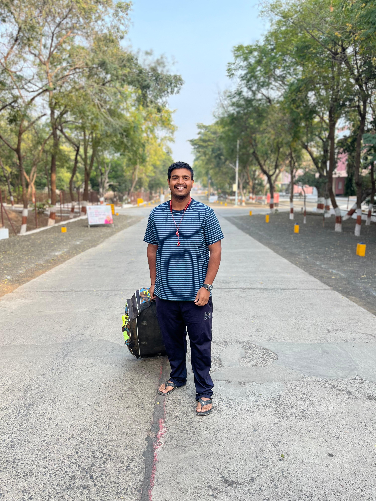
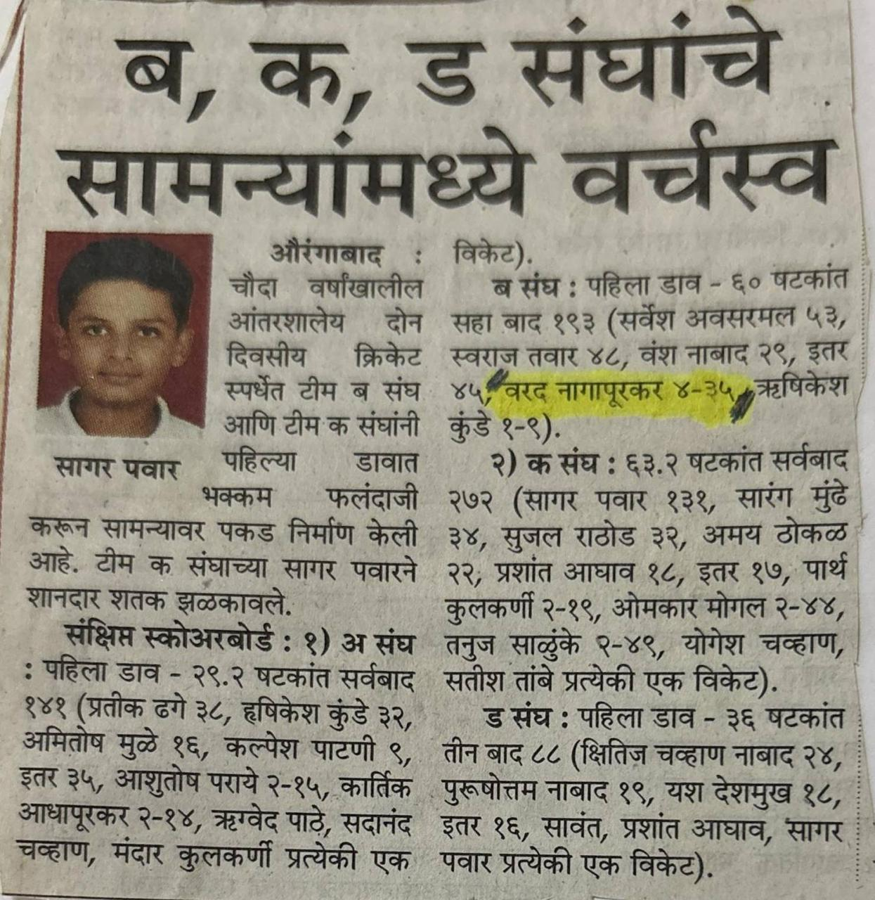
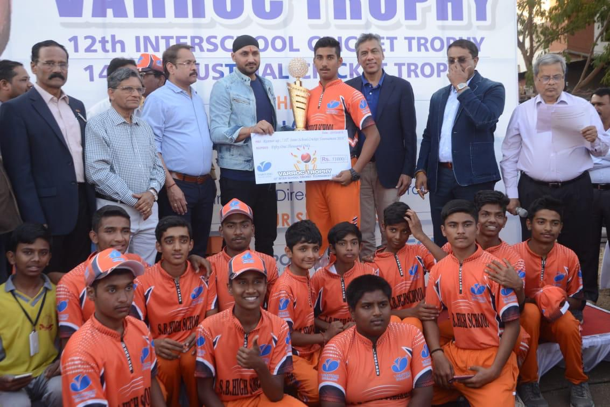
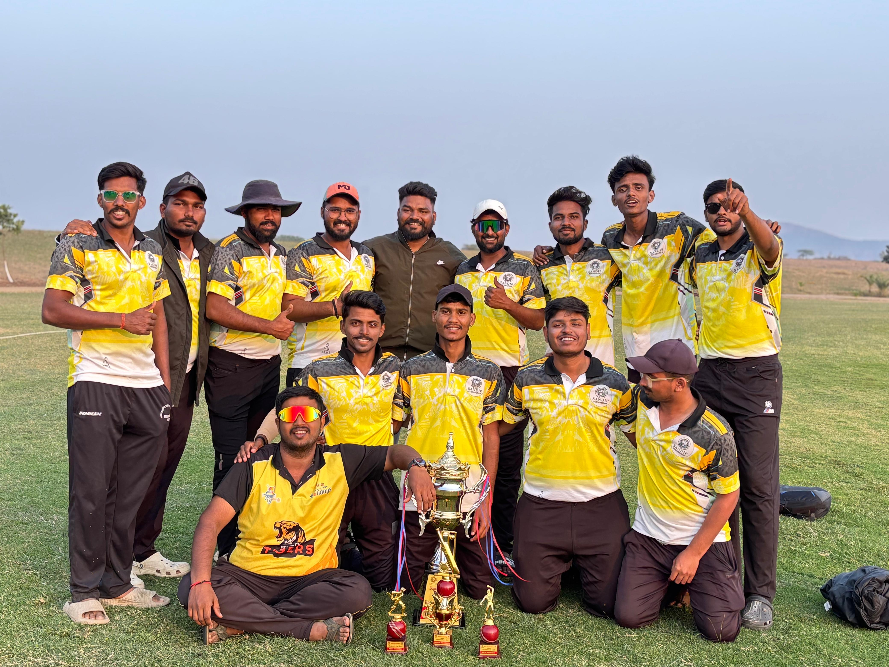

The Journey
🏏 Cricket Begins
Started cricket journey — the beginning of a decade-long passion that would shape character, discipline and leadership.

Where it all started🎯 District Representation
Represented Chhatrapati Sambhajinagar at Under-14 district level. Took 4 wickets — announced arrival as a serious bowler.

Under-14 District 2017🏆 School Tournament Titles
Won multiple titles in prestigious school tournaments — Gadia, Varroc & Campus Club. Got Trophy from INDIAN CRICKETER "Harbhajan Singh".

Varroc Tournament Campus Club Win
Campus Club Win
⭐ Under-19 Camp
Selected for Under-19 Chhatrapati Sambhajinagar Camp — competing with the city's best young cricketers while maintaining 85 percentile in 12th standard.
👑 Brahman Premier League 2024
Won Man of the Match in the biggest Tennis ball tournament BRAMHIN Premium League — received the award from his own father in front of a massive crowd. A moment bigger than any trophy.
 BPL 2024 Highlights 🎬
BPL 2024 Highlights 🎬
⚡ Jai Parshuram Premier League
Competed in JPPL V-1 — a prestigious leather ball tournament. Finished as Runner Up.
 Tournament Photo
Tournament Photo
⚡ Nashik Tournament
An incredible performance in Nashik, featuring a massive display of power hitting and clean striking.

Nashik Squad👑 Shegao — WINNERS
MIT College won the Shegao Tournament — the biggest college title. Pure domination from start to finish.
 Shegao Champions
Shegao Champions
💪 Brahman Premier League 2025
Played a poor last match — but rose from the ashes. Won Man of the Match proving that real champions don't stay down. Ever. The comeback is always greater than the setback.
 BPL 2025 Comeback 🎬
BPL 2025 Comeback 🎬